Every page migrated to direction C (warm paper / walnut / brass). Hand-rolled CSS, self-hosted fonts, top-rail chrome, inline cherry-red phone silhouette on login + phone-detail, chunky push-button keypad for pair-a-device, two-houses-brass-thread on connected families. Branch: feat/webapp-redesign-spike.
Household name as page title. 4-cell stat strip (not KPI tiles). Dense line list at 44px rows.
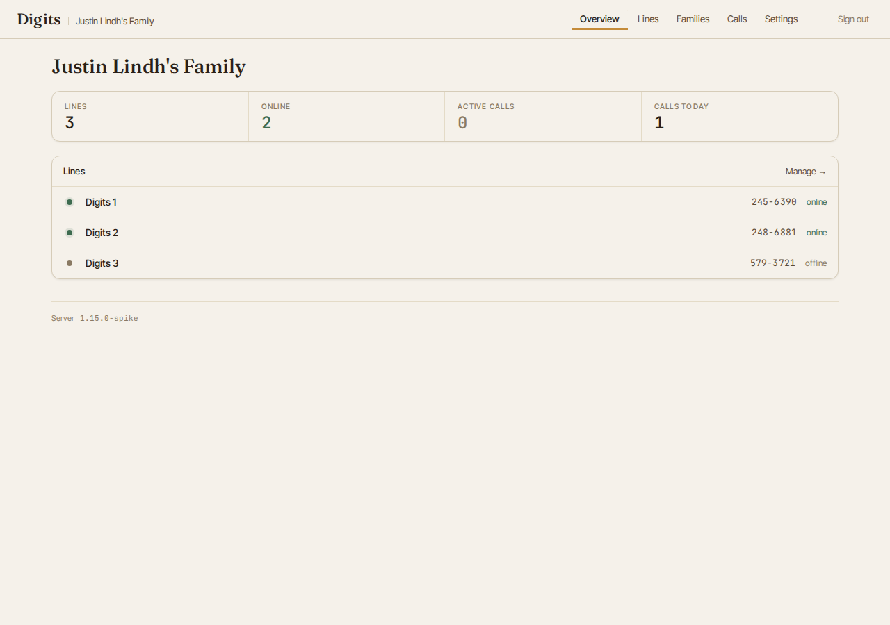
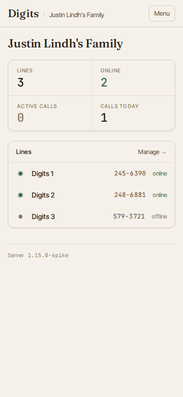
Push-button keypad modeled after the cherry-red 2500-series hardware. Clickable, with tactile press state. 6-digit pin slots fill as you tap.
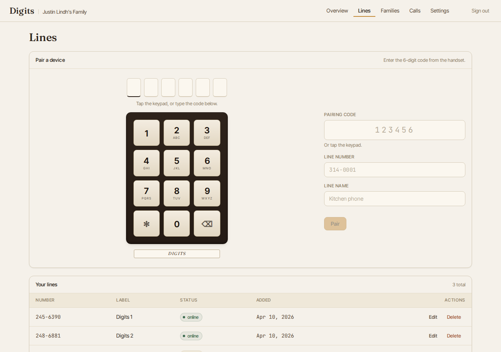
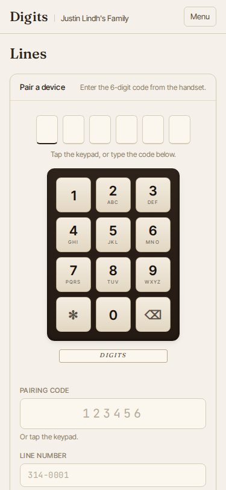
Warm household-facing front on the left (silhouette, details, voice style), collapsed operator service panel on the right (hardware versions + update disclosures + device controls).
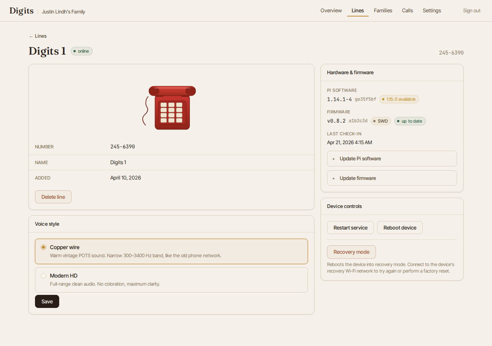
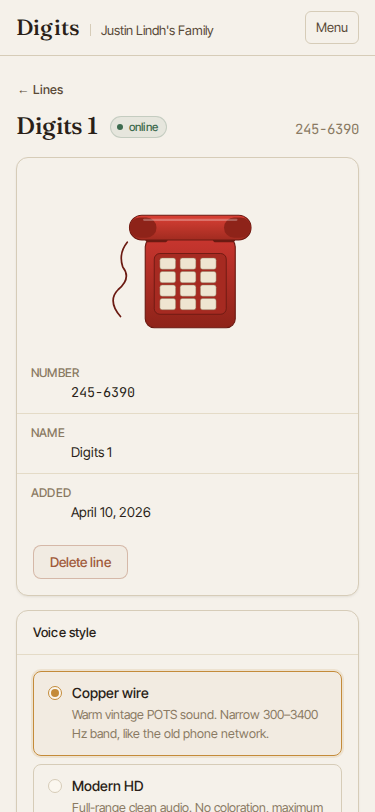
Your household on one side, the linked family on the other, joined by a dashed brass thread with status + since-date between them.
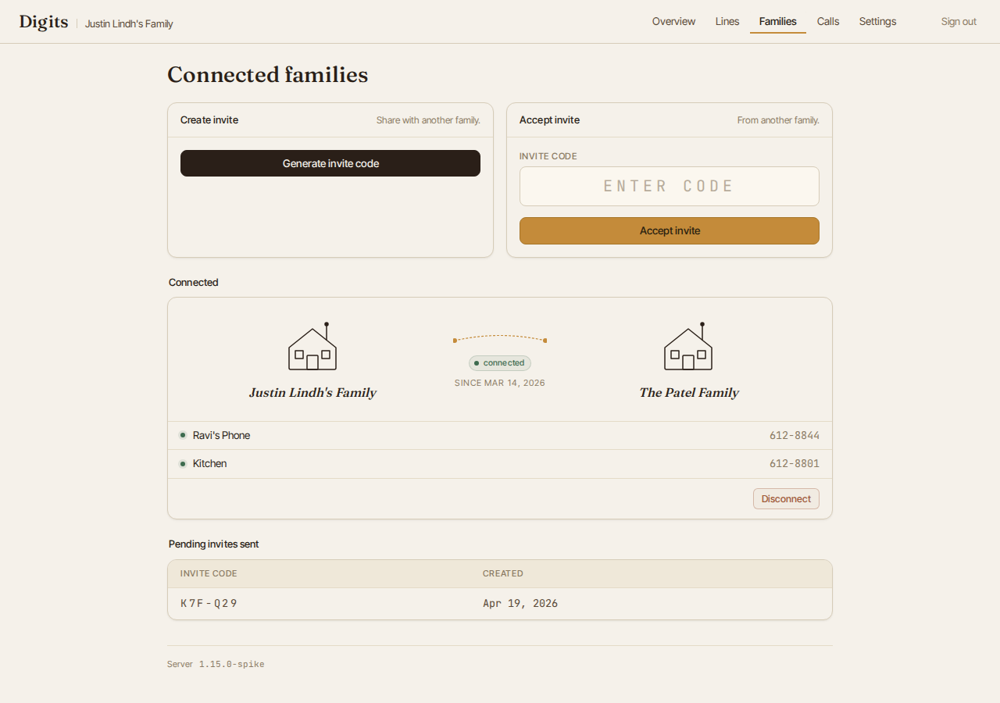
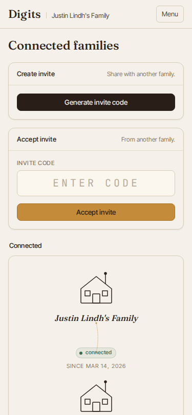
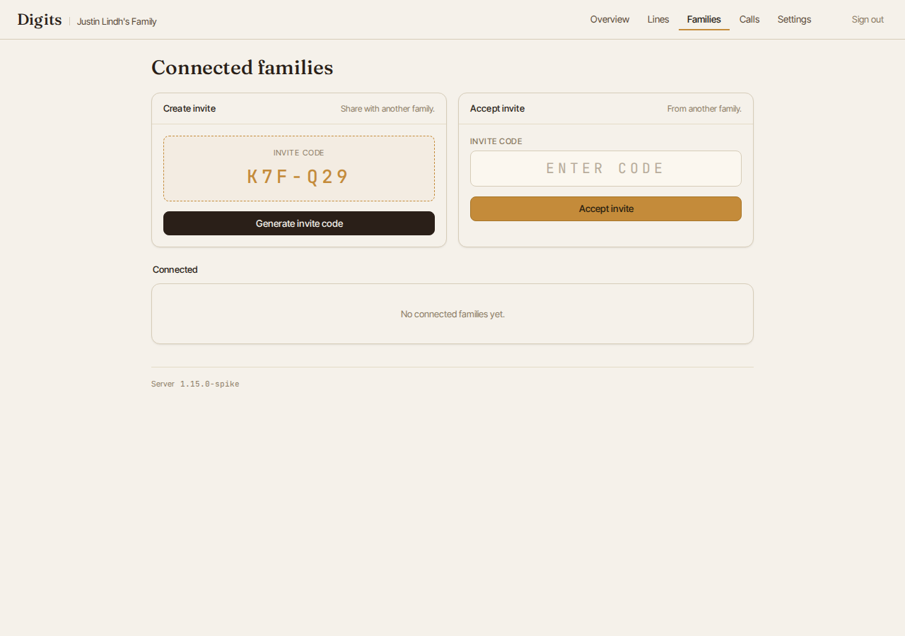
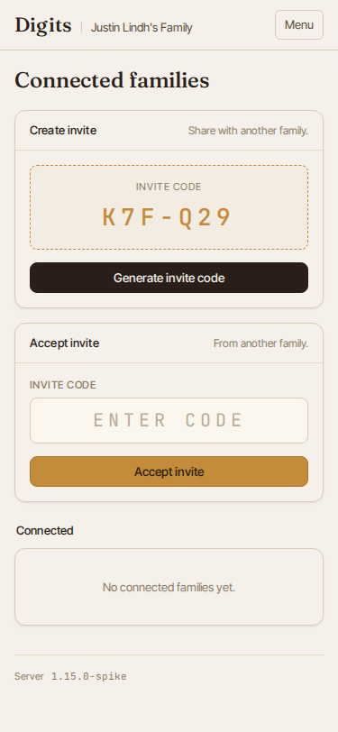
Muted table, tabular-nums, chip per status. Auto-refreshing chip pulses brass.
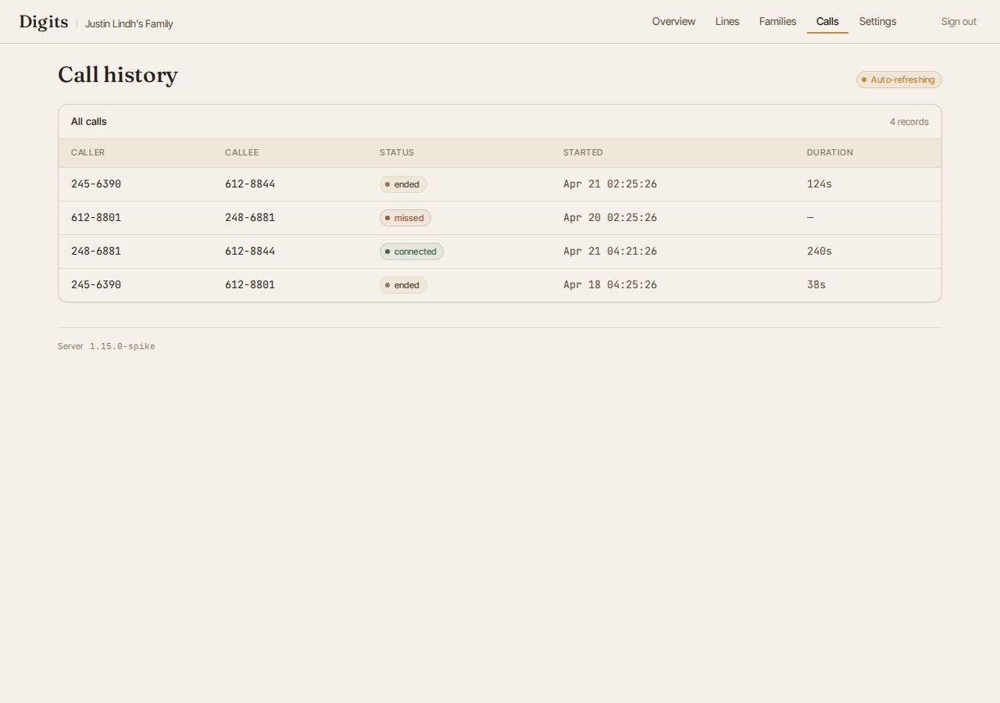
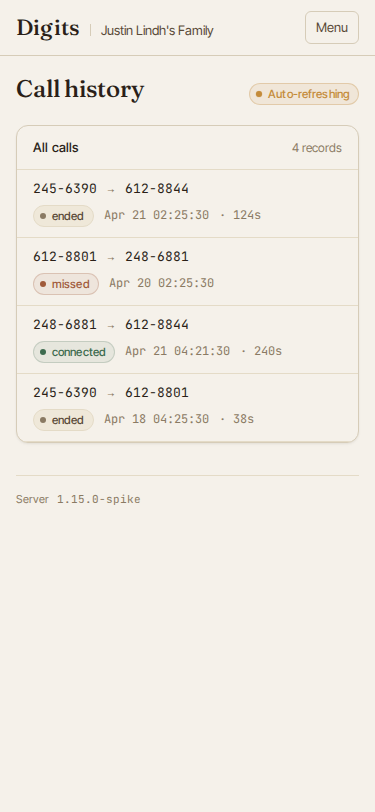
Stacked panels. Toggle is brass-filled when on. Session panel uses rust-tinted border to mark the destructive action.
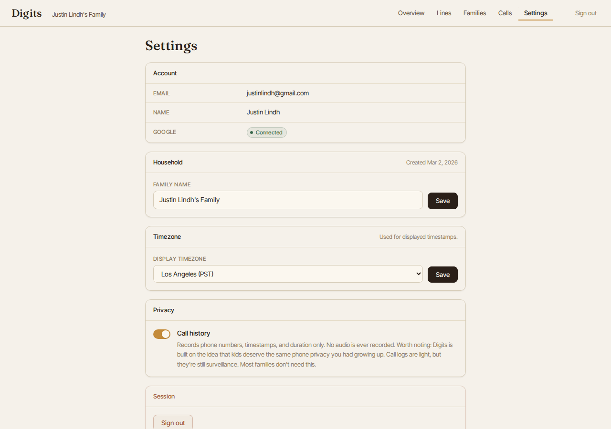
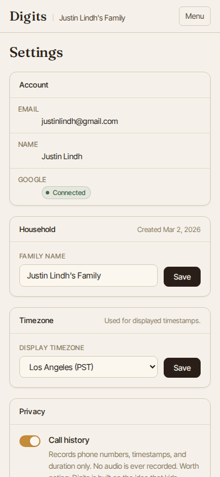
Standalone centered card. The phone silhouette is the first-impression anchor.
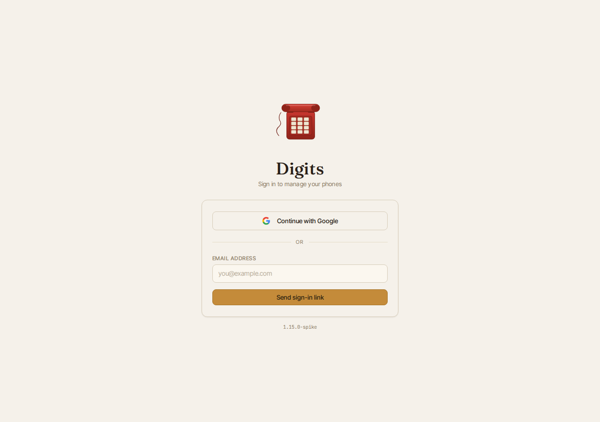
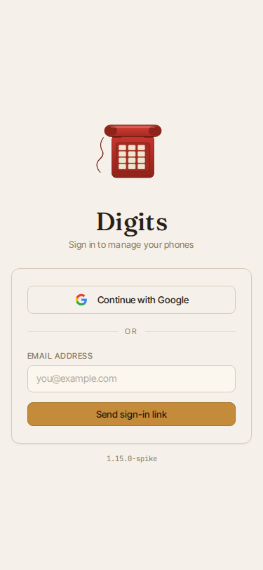
Welcome to Digits with brass italic, single field for family name.
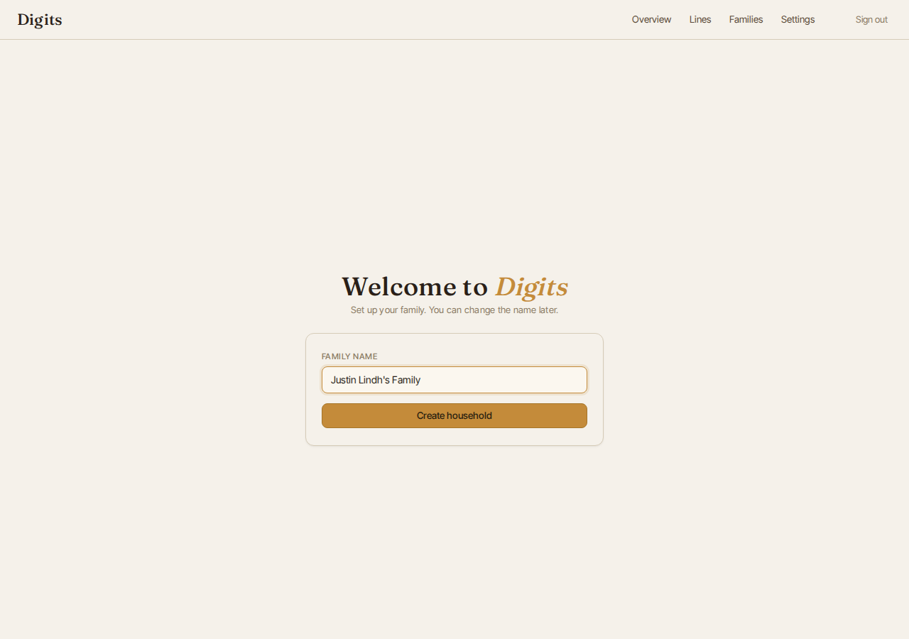
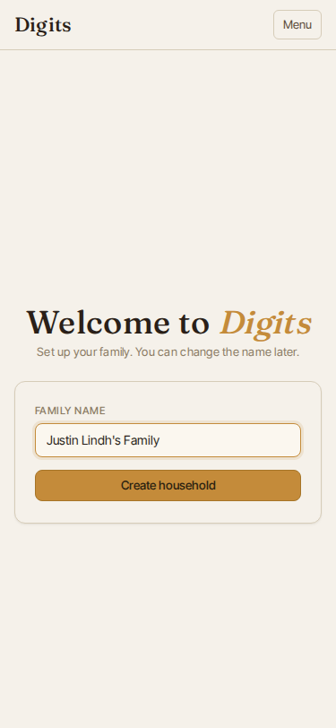